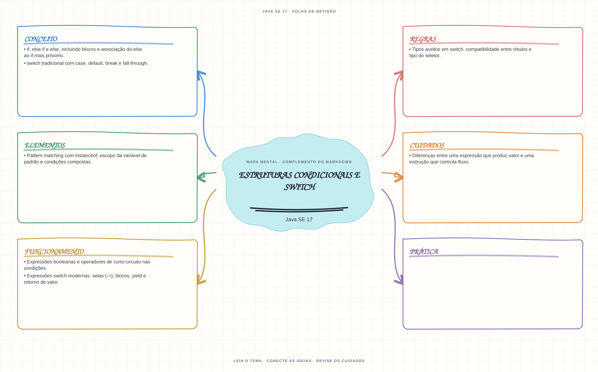

Ver mapa mental deste assuntoRastrear os caminhos de if e switch, distinguindo instruções de expressões que produzem valor.
Primeiro contato: aprenda o conceito e pratique antes de consultar os detalhes de prova. Voltar aos fundamentos se algum termo ainda for novo.
- Leia o objetivo e localize a ideia principal no conteúdo abaixo.
- Preveja o resultado, compile e execute o exemplo.
- Faça a atividade sem copiar a solução e confira a checagem comentada.
EXEMPLO DE CONSOLE
Veja a regra em execução
Antes de executar, anote sua previsão. Compile o exemplo com o JDK e compare a saída observada com as regras deste assunto.
Comandos para compilar e executar
javac -d target/bin src/02-controle-de-fluxo/condicionais-e-switch/CondicionaisESwitchExample.java
java -cp target/bin CondicionaisESwitchExampleA execução imprime o resultado no console para você comparar com sua previsão.
Consultar código-fonte: CondicionaisESwitchExample.java
public class CondicionaisESwitchExample {
public static void main(String[] args) {
System.out.println("=== Condicionais e expressao switch ===");
int nota = args.length == 0 ? 8 : Integer.parseInt(args[0]);
if (nota < 0 || nota > 10) {
System.out.println("Nota invalida: informe um valor entre 0 e 10.");
return;
}
String resultado = switch (nota) {
case 9, 10 -> "Excelente";
case 7, 8 -> "Aprovado";
case 5, 6 -> "Recuperacao";
default -> "Reprovado";
};
System.out.println("if validou a faixa da nota: " + nota + " de 10.");
System.out.println("switch selecionou a classificacao: " + resultado);
System.out.println("Execute com um argumento, por exemplo: java CondicionaisESwitchExample 6");
}
}
PRATIQUE AGORA
Faça uma pequena alteração por conta própria
Leia ou defina uma nota numérica e use if para classificá-la em aprovado ou não aprovado; teste os limites da condição.
Concluído quando: o programa compilar, produzir o resultado esperado e você conseguir explicar a regra aplicada.
CHECAGEM RÁPIDA · Estruturas condicionais e switch
Uma expressão switch com um bloco case pode usar break para devolver o resultado?
Conferir resposta comentada
Não. Um bloco de uma expressão switch usa yield para produzir valor; os caminhos precisam ser exaustivos.
Estude
if,else ifeelse, incluindo blocos e associação doelseaoifmais próximo.- Expressões booleanas e operadores de curto-circuito nas condições.
switchtradicional comcase,default,breake fall-through.- Expressões
switchmodernas: setas (->), blocos,yielde retorno de valor. - Tipos aceitos em
switch, compatibilidade entre rótulos e tipo do seletor. - Pattern matching com
instanceof, escopo da variável de padrão e condições compostas. - Diferenças entre uma expressão que produz valor e uma instrução que controla fluxo.
Prática
Reescreva um switch tradicional como expressão. Verifique quais caminhos retornam valor e quais precisam de default ou yield.
Como este capítulo se relaciona com cada exame
Fundamentos reaproveitáveis; `switch` moderno não é sintaxe Java 8.
Base de estudo deste portal; confirme o mapeamento com o blueprint vigente.
Conceitos úteis; revise pattern matching para `switch` em Java 21.
Orientação editorial sobre reaproveitamento do material; não representa objetivos oficiais nem garante cobertura do exame. Consulte o comparativo e as fontes da Oracle.